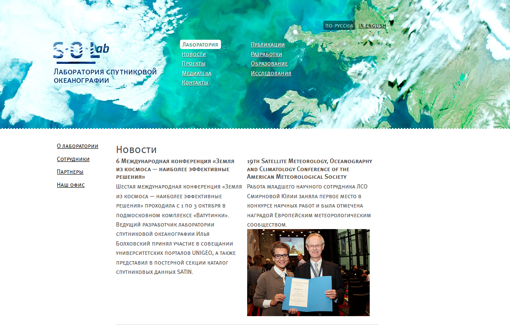
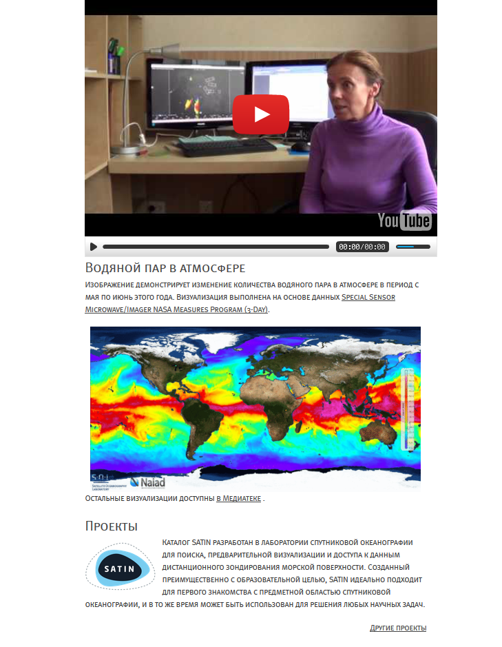
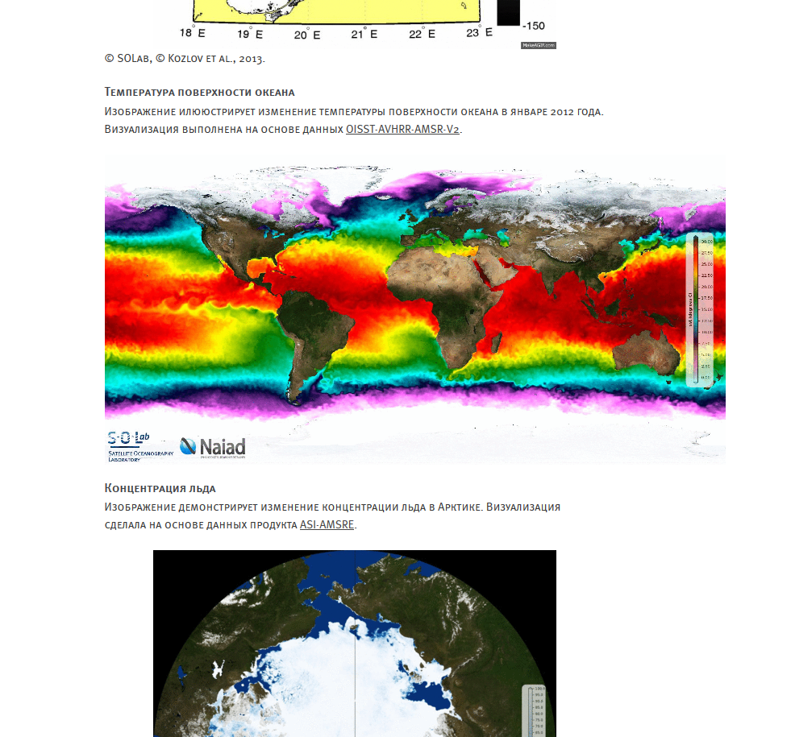
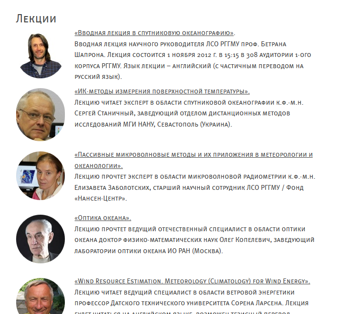

SOLab IT services
and educational activity
Ilya Bolkhovsky,
IT team leader
SOLab website

Interviews, media and articles

Data visualizations

Lectures
10 lectures, ~ 15 hours of video

Events — The first IT-talk

6 talks with slides and videos

Developers from leading IT companies
coffee and cookies

SOLAB IT Services
are providing:
Data access
The way to get data
OPeNDAP
OPeNDAP is a framework that simplifies all aspects of scientific data networking.

FTP
File Transfer Protocol

visualization and extraction

NAIAD
naiad.solab.rshu.ru
SATIN
satin.rshu.ru
Data analysis and synergy
arctic.syntool.org
SATIN EDU
How we see it: The Prototype
- Focus on practical and interactive lessons
Lectures itself can be hosted by EUMETSAT, Coursera
- Involve teachers in prior of students
Students come and leave, teachers stay.
- Set up communication
Ask your teacher, get a feedback.
- Bring a gamification
Students are lazy, give them some motivation.
Gamification is the use of game thinking and game mechanics to engage users in solving problems. Gamification is used in applications and processes to improve user engagement, return on investment, data quality, timeliness, and learning.
Interactive lessons
learn to work with data from browser *

IPython notebook
The IPython Notebook is a web-based interactive environment where you can combine code execution, text, mathematics, plots and rich media into a single document.

Workspace
Schedule, notifications and inbox

Personal portfolio
projects, researches, articles and media content

End
Thank you for your attention
solab.rshu.ru
satin.shu.ru
mailto: ilya@rshu.ru